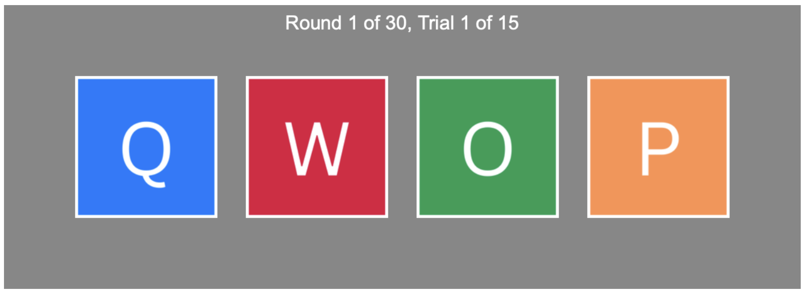
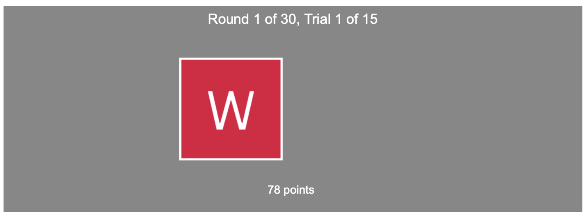
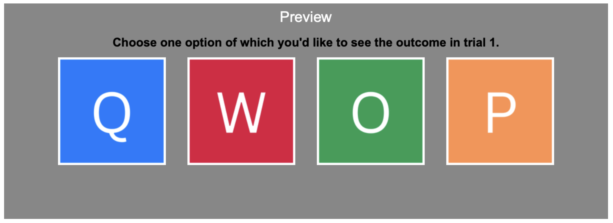

<!DOCTYPE html>
<html>
  <head>
    <meta charset="UTF-8">

    <!-- read in js libraries -->
    <script src="https://unpkg.com/jspsych@7.3.3"></script>

    <!-- Initialize jsPsych -->
    <script src="init-jspsych.js"></script>

    <!-- read in jsPsych plugins -->
    <script src="https://unpkg.com/@jspsych/plugin-html-keyboard-response@1.1.2"></script>
    <script src="https://unpkg.com/@jspsych/plugin-fullscreen@1.1.2"></script>
    <script src="exp_wu_plugins.js"></script>
    <script src="https://unpkg.com/@jspsych/plugin-html-slider-response@1.1.3"></script>
    <script src="https://unpkg.com/@jspsych/plugin-survey-html-form@1.0.3"></script>
    <script src="https://unpkg.com/@jspsych/plugin-survey-multi-select@1.1.3"></script>
    <script src="https://unpkg.com/@jspsych/plugin-survey-multi-choice@1.1.3"></script>
    <script src="https://unpkg.com/@jspsych/plugin-survey@1.0.1"></script>
    <script src="https://unpkg.com/@jspsych/plugin-html-button-response@1.2.0"></script>
    <script src="https://unpkg.com/@jspsych/plugin-call-function@2.1.0"></script>
    <script src="https://unpkg.com/@jspsych/plugin-instructions@1.1.4"></script>
    <script src="https://unpkg.com/@jspsych/plugin-preload@1.1.3"></script>

    <!--  -->
    <script src="runsheet_exp_wu.js"></script>
    <script src="stimuli_exp_wu.js"></script>
    <script src="exp_wu_queues.js"></script> <!-- updated-->


    <!-- read in stylesheets -->
    <link href="https://unpkg.com/jspsych@7.3.3/css/jspsych.css" rel="stylesheet" type="text/css" />
    <link href="style_rating_exp_wu.css" rel="stylesheet" />
    <link rel="stylesheet" href="https://unpkg.com/@jspsych/plugin-survey@1.0.1/css/survey.css">
  

  </head>

  </body>
  <script>

var participant_id = jsPsych.randomization.randomID(10)

// capture info from Prolific
var subject_id = jsPsych.data.getURLVariable('PROLIFIC_PID');
var study_id = jsPsych.data.getURLVariable('STUDY_ID');
var session_id = jsPsych.data.getURLVariable('SESSION_ID');
// pick a random condition for the subject at the start of the experiment
var condition_assignment = jsPsych.randomization.sampleWithoutReplacement(['ind', 'str'], 1)[0];
console.log("Condition: " + condition_assignment)

  jsPsych.data.addProperties({
    subject_id: subject_id,
    study_id: study_id,
    session_id: session_id,
    condition: condition_assignment,
    participant_id: participant_id
  });


// preload
var preload = {
    type: jsPsychPreload,
    images: ['Q.png', 'W.png', 'O.png', 'P.png'] 
};

// define welcome message
var welcome = {
    type: jsPsychHtmlKeyboardResponse,
    stimulus: `Welcome to the experiment. You're in the ${condition_assignment}-condition. Press any key to begin.` // condition not displayed in actual experiment
  };

// define round end message
var round_end = {
    type: jsPsychHtmlKeyboardResponse,
    stimulus: "End of round. Take a break. Press any key to continue when you are ready.",
    on_finish: function(data){ 
      queues.ind1 = ind1;
      queues.ind2 = ind2;
      queues.ind3 = ind3;
      queues.ind4 = ind4;
      queues.ind5 = ind5;
      queues.ind6 = ind6;
      queues.ind7 = ind7;
      queues.ind8 = ind8;
      queues.ind9 = ind9;
      queues.ind10 = ind10;
      queues.ind11 = ind11;
      queues.ind12 = ind12;
      queues.ind13 = ind13;
      queues.ind14 = ind14;
      queues.ind15 = ind15;
      queues.ind16 = ind16;
      queues.ind17 = ind17;
      queues.ind18 = ind18;
      queues.ind19 = ind19;
      queues.ind20 = ind20;

      queues.str1 = str1;
      queues.str2 = str2;
      queues.str3 = str3;
      queues.str4 = str4;
      queues.str5 = str5;
      queues.str6 = str6;
      queues.str7 = str7;
      queues.str8 = str8;
      queues.str9 = str9;
      queues.str10 = str10;
      queues.str11 = str11;
      queues.str12 = str12;
      queues.str13 = str13;
      queues.str14 = str14;
      queues.str15 = str15;
      queues.str16 = str16;
      queues.str17 = str17;
      queues.str18 = str18;
      queues.str19 = str19;
      queues.str20 = str20;

      counter.round += 1; // 20 rounds acquisition, 10 rounds transfer
      counter.trial = 1;
      counter.n_rounds = 30; 
    }
  };


// define experiment end message
var expt_end = {
    type: jsPsychHtmlKeyboardResponse,
    stimulus: "End of task. Press any key to quit."
  };

//------------------------------------
// Functions to turn fullscreen on/off
//------------------------------------

  var fullscreen_on = {
    type: jsPsychFullscreen,
    fullscreen_mode: true,
    message: '<p>The experiment will switch to full screen mode when you press the button below.</p><p>Where possible, please stay in full screen mode for the entire experiment.</p>'
  };


  var fullscreen_off = {
    type: jsPsychFullscreen,
    fullscreen_mode: false
  };


//------------------------------------
// Define and randomise experimental variables
//------------------------------------

  // payout queues *without* randomisation, place them in a global variable (so they can be accessed and manipulated independently of the jsPsych trial structure).
  var ind1 = [[],[]];
  var ind2 = [[],[]];
  var ind3 = [[],[]];
  var ind4 = [[],[]];
  var ind5 = [[],[]];
  var ind6 = [[],[]];
  var ind7 = [[],[]];
  var ind8 = [[],[]];
  var ind9 = [[],[]];
  var ind10 = [[],[]];
  var ind11 = [[],[]];
  var ind12 = [[],[]];
  var ind13 = [[],[]];
  var ind14 = [[],[]];
  var ind15 = [[],[]];
  var ind16 = [[],[]];
  var ind17 = [[],[]];
  var ind18 = [[],[]];
  var ind19 = [[],[]];
  var ind20 = [[],[]];
  
  var str1 = [[],[]];
  var str2 = [[],[]];
  var str3 = [[],[]];
  var str4 = [[],[]];
  var str5 = [[],[]];
  var str6 = [[],[]];
  var str7 = [[],[]];
  var str8 = [[],[]];
  var str9 = [[],[]];
  var str10 = [[],[]];
  var str11 = [[],[]];
  var str12 = [[],[]];
  var str13 = [[],[]];
  var str14 = [[],[]];
  var str15 = [[],[]];
  var str16 = [[],[]];
  var str17 = [[],[]];
  var str18 = [[],[]];
  var str19 = [[],[]];
  var str20 = [[],[]];
  
  for (var i = 0; i < ind_round1_queue.length; i++){ // length = 4 (= four options)
    ind1[i] = ind_round1_queue[i];
    ind2[i] = ind_round2_queue[i];
    ind3[i] = ind_round3_queue[i];
    ind4[i] = ind_round4_queue[i];
    ind5[i] = ind_round5_queue[i];
    ind6[i] = ind_round6_queue[i];
    ind7[i] = ind_round7_queue[i];
    ind8[i] = ind_round8_queue[i];
    ind9[i] = ind_round9_queue[i];
    ind10[i] = ind_round10_queue[i];
    ind11[i] = ind_round11_queue[i];
    ind12[i] = ind_round12_queue[i];
    ind13[i] = ind_round13_queue[i];
    ind14[i] = ind_round14_queue[i];
    ind15[i] = ind_round15_queue[i];
    ind16[i] = ind_round16_queue[i];
    ind17[i] = ind_round17_queue[i];
    ind18[i] = ind_round18_queue[i];
    ind19[i] = ind_round19_queue[i];
    ind20[i] = ind_round20_queue[i];
    
    str1[i] = str_round1_queue[i];
    str2[i] = str_round2_queue[i];
    str3[i] = str_round3_queue[i];
    str4[i] = str_round4_queue[i];
    str5[i] = str_round5_queue[i];
    str6[i] = str_round6_queue[i];
    str7[i] = str_round7_queue[i];
    str8[i] = str_round8_queue[i];
    str9[i] = str_round9_queue[i];
    str10[i] = str_round10_queue[i];
    str11[i] = str_round11_queue[i];
    str12[i] = str_round12_queue[i];
    str13[i] = str_round13_queue[i];
    str14[i] = str_round14_queue[i];
    str15[i] = str_round15_queue[i];
    str16[i] = str_round16_queue[i];
    str17[i] = str_round17_queue[i];
    str18[i] = str_round18_queue[i];
    str19[i] = str_round19_queue[i];
    str20[i] = str_round20_queue[i];
  }

  // specify queues
  var queues = {};
    queues.ind1 = ind1;
    queues.ind2 = ind2;
    queues.ind3 = ind3;
    queues.ind4 = ind4;
    queues.ind5 = ind5;
    queues.ind6 = ind6;
    queues.ind7 = ind7;
    queues.ind8 = ind8;
    queues.ind9 = ind9;
    queues.ind10 = ind10;
    queues.ind11 = ind11;
    queues.ind12 = ind12;
    queues.ind13 = ind13;
    queues.ind14 = ind14;
    queues.ind15 = ind15;
    queues.ind16 = ind16;
    queues.ind17 = ind17;
    queues.ind18 = ind18;
    queues.ind19 = ind19;
    queues.ind20 = ind20;
    
    queues.str1 = str1;
    queues.str2 = str2;
    queues.str3 = str3;
    queues.str4 = str4;
    queues.str5 = str5;
    queues.str6 = str6;
    queues.str7 = str7;
    queues.str8 = str8;
    queues.str9 = str9;
    queues.str10 = str10;
    queues.str11 = str11;
    queues.str12 = str12;
    queues.str13 = str13;
    queues.str14 = str14;
    queues.str15 = str15;
    queues.str16 = str16;
    queues.str17 = str17;
    queues.str18 = str18;
    queues.str19 = str19;
    queues.str20 = str20;
    
    queues.practice_ind = practice_queue_ind;
    queues.practice_str = practice_queue_str; // practice trials

  // randomise allocation of image numbers to payout numbers //??
  //var stim_allocation = jsPsych.randomization.sampleWithoutReplacement([...Array(stimuli.length).keys()], queues.ind1.length);

  // set up block and trial counters
  var counter = {};
  counter.round = 1;
  counter.trial = 1;
  counter.n_rounds = 30; 


  //------------------------------------
  // Choice trials 
  //------------------------------------
  let isPracticePhase = true; // Set this to `false` when the task phase starts
  let isAcquisition = false; // set this to "true" when acquisition phase starts, and again to "false" when transfer phase starts

  // track accuracy
  var correct_option = null; // Store the correct choice per round
  var accurate_choices = 0;

  // rounds
  var round_ind = { 
    timeline_variables: task_stimuli_round, 
    sample: {
      type: 'with-replacement',
      size: 15
    },
    timeline:
    [{
      type: jsPsychFourArmedBandit,
      stimuli: stimuli,
      n_trials: 15,
      choice_type: jsPsych.timelineVariable('choice_type'),
      q_stim_number: jsPsych.timelineVariable('q_stim_number'),
      w_stim_number: jsPsych.timelineVariable('w_stim_number'),
      o_stim_number: jsPsych.timelineVariable('o_stim_number'),
      p_stim_number: jsPsych.timelineVariable('p_stim_number')
    
    }],
    conditional_function: function(){
    // execute timeline if condition_assignment = 'ind' & isAcquisition = true, skip if condition_assignment = 'str'
      if((condition_assignment == 'str' && isAcquisition == true) || (condition_assignment == 'ind' && isAcquisition == false)){
        return false;
      } else if ((condition_assignment == 'ind' && isAcquisition == true) || (condition_assignment == 'str' && isAcquisition == false)) {
        return true;
      }
    }
  };

  var round_str = { 
    timeline_variables: task_stimuli_round, 
    sample: {
      type: 'with-replacement',
      size: 15 
    },
    timeline:
    [{
      type: jsPsychFourArmedBandit,
      stimuli: stimuli,
      n_trials: 15,
      choice_type: jsPsych.timelineVariable('choice_type'),
      q_stim_number: jsPsych.timelineVariable('q_stim_number'),
      w_stim_number: jsPsych.timelineVariable('w_stim_number'),
      o_stim_number: jsPsych.timelineVariable('o_stim_number'),
      p_stim_number: jsPsych.timelineVariable('p_stim_number')
    
    }],
    conditional_function: function(){
    // execute timeline if condition_assignment = 'str', skip if condition_assignment = 'ind'
      if((condition_assignment == 'ind' && isAcquisition == true) || (condition_assignment == 'str' && isAcquisition == false)){
        return false;
      } else if ((condition_assignment == 'str' && isAcquisition == true) || (condition_assignment == 'ind' && isAcquisition == false)) {
        return true;
      }
    }
  };

  var preview = { 
    timeline_variables: task_stimuli_preview, 
    timeline:
    [{
      type: jsPsychFourArmedBandit,
      stimuli: stimuli,
      n_trials: 1,
      choice_type: jsPsych.timelineVariable('choice_type'),
      q_stim_number: jsPsych.timelineVariable('q_stim_number'),
      w_stim_number: jsPsych.timelineVariable('w_stim_number'),
      o_stim_number: jsPsych.timelineVariable('o_stim_number'),
      p_stim_number: jsPsych.timelineVariable('p_stim_number')
    
    }],
    on_finish: function(data) {
      counter.trial = 1;  // Reset trial counter
    }
  };


  var start_round = {
    type: jsPsychHtmlKeyboardResponse,
    stimulus: function() {
        return `<p style="font-size: 40px;">Round ${counter.round}</p>`;
    },
    choices: "NO_KEYS",
    trial_duration: 1000,
    on_start: function(data) {
      console.log("Round:", counter.round)
    }
  };


  var feedback = {
    type: jsPsychHtmlButtonResponse,
    stimulus: function() {
        let performance = (accurate_choices / 15) * 100; // Convert to percentage -> 15 scoring trials per round
        performance = Math.round(performance); // Round to whole number

          // Determine bar color based on performance
          let barColor;
          if (performance === 100) {
            barColor = "#228B22";  
            label = "Perfect!";
          } else if (performance >= 80) {
            barColor = "#9ACD32";
            label = "Good job!";
          } else if (performance >= 50) {
            barColor = "#fff44f";
            label = "";
          } else if (performance >= 30) {
            barColor = "orange";
            label = "";
          } else {
            barColor = "red";
            label = "";
          }

        return `
            <div style="font-size: 24px; text-align: center; margin-bottom: 20px;">
                Your performance this round:
            </div>
            <div style="font-size: 24px; text-align: center; margin-bottom: 20px;">
              You chose the best option in <b>${performance}%</b> of the trials.
            </div>
            <div style="width: 80%; height: 30px; background-color: lightgray; margin: auto; position: relative;">
                <div style="width: ${performance}%; height: 100%; background-color: ${barColor}; transition: width 0.5s;"></div>
                ${label}
            </div>
        `;
    },
    choices: ['Continue'],
    button_html: `<button style="width: 150px; height: 50px; font-size: 18px; position: absolute; bottom: 30px; left: 50%; transform: translateX(-50%); cursor: pointer; background-color: white; border: 1px solid black; border-radius: 5px;">
            Continue
        </button>`,
    on_start: function() {
        console.log("Accurate choices this round:", accurate_choices);
    },
    on_finish: function(data) {  
        // save accuracy
        data.accurate_choices = accurate_choices;
        console.log("Accuracy:", data)

        accurate_choices = 0; // Reset counter for next round

    }
  };


  var choice_task = { 
    timeline: [preview, start_round, round_ind, round_str, feedback, round_end], 
    repetitions: 10, //
    randomize_order: false,
    on_start: function() {
      isPracticePhase = false;
      isAcquisition = true;
      console.log("isPracticePhase: ", isPracticePhase);
      console.log("isAcquisition:", isAcquisition);
    }
  };

  var transfer = {
    timeline: [preview, start_round, round_ind, round_str, feedback, round_end], 
    repetitions: 10, //
    randomize_order: false,
    on_start: function() {
      isPracticePhase = false;
      isAcquisition = false;
      console.log("isAcquisition:", isAcquisition);
    }
    
  };


  //------------------------------------
  // Instructions for the choice trials
  //------------------------------------

  var start_exp = {
    type: jsPsychHtmlKeyboardResponse,
    stimulus: `
    <p style="font-size: 20px;"><strong>You're ready to start the experiment now.</strong></p>
    <p>Remember, the goal of the experiment is to <strong>collect as many points as possible</strong>.</p>
    <br></br>
    <p>Please place your fingers on the keys <strong>'Q', 'W', 'O' and 'P'</strong>.</p>
    <p>Press any key to begin.</p>
    `,
    on_finish: function(data) {
      counter.trial = 1;  // Reset trial counter
    }
  };


  var instructions = { // change pictures (20 --> 15 trials)
    type: jsPsychInstructions,
    pages: [
      `
      <div style="display: flex; flex-direction: column; align-items: center; padding: 10px; gap: 10px; max-width: 1000px; margin: auto;">
          <div style="text-align: center; width: 100%; font-size: 20px;">
            <p><strong>Choice Task</strong></p>
          </div>
          <div style="text-align: left; width: 100%;">
            <p>In the present experiment, you will make a series of decisions between <strong>four choice alternatives</strong> (Q, W, O and P). Each choice you make will reward you with <strong>points</strong>.</p>
            <p> Your goal is to collect <strong>as many points as possible</strong>.</p>
            <p>In each trial, you will be presented with four options (see below). You can select any of them by pressing one of the corresponding keys:</p>
            <ul>
                    <li>Press <strong>'Q'</strong> for option <strong>Q</strong>.</li>
                    <li>Press <strong>'W'</strong> for option <strong>W</strong>.</li>
                    <li>Press <strong>'O'</strong> for option <strong>O</strong>.</li>
                    <li>Press <strong>'P'</strong> for option <strong>P</strong>.</li>
                </ul>
          </div>
          
          <!-- Image -->
          <div style="position: relative; display: flex; justify-content: center; align-items: center; width: 100%; padding: 20px;">
            <!-- Image -->
            
          </div>
      </div>
    `,
    `
    <div style="display: flex; flex-direction: column; align-items: center; padding: 10px; gap: 10px; max-width: 1000px; margin: auto;">
      <div style="text-align: center; width: 100%; font-size: 20px;">
          <p><strong>Choice Task</strong></p>
      </div>
      <div style="text-align: left; width: 100%;">
        <p>You will then receive a reward between 0 and 100 points, based on the option you chose. The number of points received will be displayed at the bottom of the screen.</p>
        <p>The number of points you receive for each option will vary, but each option has a <strong>constant average reward</strong> in each round. The average reward of each option can change <strong>between</strong> rounds.</p>
        <p>At the end of each round, you will receive feedback on your overall performance for that round.</p>
      </div>
      <div style="display: flex; align-items: center; justify-content: center;">
        

        <!-- Note -->
            <div style="position: absolute; top: 60%; left: 16%; transform: translate(-50%, -50%); width: 250px; background-color: #f9f9f9; border: 1px solid #ccc; border-radius: 8px; padding: 10px; box-shadow: 0px 4px 6px rgba(0, 0, 0, 0.1);">
              <p style="margin: 0; font-size: 16px; color: #333;"><strong>Note:</strong> Option W was chosen. 78 points were earned.</p>
              <!-- Arrow -->
              <div style="position: absolute; top: 50%; right: -10px; transform: translateY(-50%); width: 0; height: 0; border-top: 10px solid transparent; border-bottom: 10px solid transparent; border-left: 10px solid #ccc;"></div>
              <div style="position: absolute; top: 50%; right: -9px; transform: translateY(-50%); width: 0; height: 0; border-top: 9px solid transparent; border-bottom: 9px solid transparent; border-left: 9px solid #f9f9f9;"></div>
            </div>
      </div>
      <br></br>
    </div>
      `,
    `
    <div style="display: flex; flex-direction: column; align-items: center; padding: 10px; gap: 10px; max-width: 1150px; margin: auto;">
      <div style="text-align: center; width: 100%; font-size: 20px;">
          <p><strong>Preview</strong></p>
      </div>
      <div style="text-align: left; width: 100%;">
        <p>Before each round begins, you have the chance to <em>preview</em> the reward of <strong>one</strong> option. This allows you to gather some information before making your first decision.</p>
        <p>The word "Preview" is presented at the top of the screen to indicate a preview trial. The outcome of your choice in this trial won't be added to your total score.</p>
      </div>
      <div style="display: flex; align-items: center; justify-content: center;">
        
      </div>
      <div style="text-align: left; width: 100%;">
        <p>You will perform <strong>30 rounds</strong>, each consisting of <strong>one preview</strong> and <strong>15 scoring trials</strong>. The experiment will take approximately 30 minutes, and there is <strong>no</strong> time limit on your decisions.</p>
        <p>Before starting the main task, you will first complete a short <strong>practice round</strong> (one preview and five scoring trials) to familiarize yourself with the task. Once you’re ready, click 'Next'.</p> 
      </div>
    `
    ], 
      show_clickable_nav: true,  // Enables navigation buttons
      button_label_next: "Next",
      button_label_previous: "Back"  // Enables the "Back" button

  };

  //-----------------------------------------------
  // Practice trials - Choice task (+ preview)
  //-----------------------------------------------

  var practice_ind = {
    timeline_variables: task_stimuli_round, 
    sample: {
      type: 'with-replacement',
      size: 5
    },
    timeline:
    [{
      type: jsPsychFourArmedBandit,
      stimuli: stimuli,
      n_trials: 5,
      choice_type: jsPsych.timelineVariable('choice_type'),
      q_stim_number: jsPsych.timelineVariable('q_stim_number'),
      w_stim_number: jsPsych.timelineVariable('w_stim_number'),
      o_stim_number: jsPsych.timelineVariable('o_stim_number'),
      p_stim_number: jsPsych.timelineVariable('p_stim_number')
    
    }],
    conditional_function: function(){
    // execute timeline if condition_assignment = 'ind', skip if condition_assignment = 'str'
      if(condition_assignment == 'str' && isPracticePhase == true){
        return false;
      } else if (condition_assignment == 'ind' && isPracticePhase == true) {
        return true;
      }
    }
  }; // separate reward queues for practice trials 
  

  var practice_str = {

    timeline_variables: task_stimuli_round, 
    sample: {
      type: 'with-replacement',
      size: 5
    },
    timeline:
    [{
      type: jsPsychFourArmedBandit,
      stimuli: stimuli,
      n_trials: 5,
      choice_type: jsPsych.timelineVariable('choice_type'),
      q_stim_number: jsPsych.timelineVariable('q_stim_number'),
      w_stim_number: jsPsych.timelineVariable('w_stim_number'),
      o_stim_number: jsPsych.timelineVariable('o_stim_number'),
      p_stim_number: jsPsych.timelineVariable('p_stim_number')
    
    }],
    conditional_function: function(){
    // execute timeline if condition_assignment = 'str', skip if condition_assignment = 'ind'
      if(condition_assignment == 'ind' && isPracticePhase == true){
        return false;
      } else if (condition_assignment == 'str' && isPracticePhase == true) {
        return true;
      }
    }

  };


  var start_round_practice = {
    type: jsPsychHtmlKeyboardResponse,
    stimulus: `
    <p style="font-size: 40px;">Practice Round</p>
    `,
    choices: "NO_KEYS",
    trial_duration: 1000
  };

  var practice = { 
    timeline: [preview, start_round_practice, practice_ind, practice_str], 
    repetitions: 1, //
    randomize_order: false
  };


//------------------------------------
// Declaration of consent
//------------------------------------

var consent = {
    type: jsPsychHtmlButtonResponse,
    stimulus: `
      <div style="display: flex; flex-direction: column; align-items: center; padding: 10px; gap: 10px; max-width: 1100px; margin: auto;">
          <div style="text-align: center; width: 100%; font-size: 20px;">
            <p><strong>General Information and Declaration of Consent</strong></p>
          </div>
          <div style="text-align: left; width: 100%;">
            <p>Thank you for your interest in our research project. Enclosed you will find information about the research project, the conditions of participation and the handling of the collected data. Please read everything carefully. If you agree and want to participate in the experiment, please confirm by giving your consent below.</p>
            </div>
          <div style="text-align: left; width: 100%;">
            <p><strong>General information about the research project:</strong></p>
            <p>This study investigates how people learn and make decisions in uncertain environments. The study takes about 30 minutes in total. It includes multiple rounds of a <strong><em>choice task</em></strong> in which you have to make a series of decisions between four choice alternatives to earn rewards (points). The number of points obtainable from each option is unknown to you in the beginning, but you can learn about the rewards by selecting the options. Before the first trial of each round, you can preview the reward of one option, to gather some information before you make your first decision. Occasionally during and at the end of the experiment, you will be asked to answer a few questions about your expectations and thoughts on the task. No special stress or harm is expected as a result of participating in this research project. Participation in the study is remunerated at <strong>10€ per hour</strong>, rounded up to the nearest minute. Even if you decide to withdraw from the study, you are still entitled to receive the corresponding remuneration for the time spent up to that point, provided that this can be clearly demonstrated (see section Voluntary participation).</p>
          </div>
          <div style="text-align: left; width: 100%;">
            <p><strong>Voluntary participation:</strong></p>
            <p>Your participation in this research project is <strong>voluntary</strong>. You can withdraw your consent to participate at any time and without giving reasons, without receiving any disadvantages. Even if you decide to withdraw from the study, you are still entitled to receive the corresponding remuneration for the time spent up to that point, provided that this can be clearly demonstrated.</p>
          </div>
          <div style="text-align: left; width: 100%;">
            <p><strong>Participation requirements:</strong></p>
            <p>The participation requirements are <strong>a minimum age of 18 years, the absence of color blindness, and the absence of photosensitive epilepsy</strong> due to the potential for occasional unintended flickering of stimuli on the screen, which may occur in some web browsers. Those who have already participated in this study are excluded from participation.</p>
          </div>
          <div style="text-align: left; width: 100%;">
            <p><strong>Data protection and anonymity:</strong></p>
            <p><strong>No personal data are collected</strong> as part of this study. It is therefore not possible for us to personally identify you. As a user of Prolific, you have entered into a separate personal data processing agreement with Prolific (https://participant-help.prolific.co/hc/en-gb/articles/360021786554-Data-Protection-and-Privacy-GDPR). This agreement is independent of your consent related to this study and the personal data collected by Prolific will not be made available to the research team of this study at any point.</p>
          </div>
          <div style="text-align: left; width: 100%;">
            <p><strong>Use of data:</strong></p>
            <p>The results of this study may be published for teaching and research purposes (e.g. theses, scientific publications or conference papers). These results will be presented in anonymized form, i.e. without the data being able to be connected to a specific person. The fully anonymized data of this study will be made available as "open data" in an internet-based repository, if applicable. Thus, this study follows the recommendations of the German Research Foundation (DFG) for quality assurance with regard to verifiability and reproducibility of scientific results, as well as optimal data re-use. If you would like to receive information on the scientific results of the study after its completion, please send an e-mail to Henrike Flimm (Henrike.Flimm@psy.lmu.de).</p>
          </div>
          <div style="text-align: left; width: 100%;">
            <p><strong>Legal basis and revocation:</strong></p>
            <p>The legal basis for processing the aforementioned personal data is the consent pursuant to Art. 6 (1) letter a EU-DSGVO at the end of this document. You have the right to revoke the data protection consent at any time. The revocation does not affect the lawfulness of the processing carried out on the basis of the consent until the revocation. You can request an obligatory deletion of your data at any time - as long as you can provide sufficient information that allows us to identify your data. To do so, please contact the research project managers. You will not suffer any disadvantages as a result of the revocation.</p>
          </div>
          <div style="text-align: left; width: 100%;">
            <p><strong>Research project managers:</strong></p>
            <p>If you have any questions about the research project or if you want to exercise your right to withdraw your consent, please contact the research project managers:</p>
            <p>Henrike Flimm: <a href="mailto:Henrike.Flimm@psy.lmu.de">Henrike.Flimm@psy.lmu.de</a><br>
            Prof. Dr. Christopher Donkin: <a href="mailto:c.donkin@psy.lmu.de">c.donkin@psy.lmu.de</a></p>
            <p>Ludwig-Maximilians-Universität München<br>
            Department Psychologie<br>
            Lehrstuhl für Computational Modeling in Psychology<br>
            Akademiestr. 7<br>
            80799 München</p>
          </div>
          <div style="text-align: left;">
            <p><strong>Further contact addresses:</strong></p>
            <p>You can also contact the data protection officer of the research institution or the competent supervisory authority if you have any data protection concerns in connection with this study and/or wish to lodge a complaint.</p>
            <p>Ludwig-Maximilians-Universität München<br>
            Behördlicher Datenschutzbeauftragter<br>
            Geschwister-Scholl-Platz 1<br>
            D-80539 München<br>
            Bayerisches Landesamt für Datenschutzaufsicht<br>
            Promenade 27<br>
            91522 Ansbach</p>
            <br>
            <p>Date: March 06, 2025</p>
            <p><strong>Declaration of consent.</strong> I hereby certify that I have read and understood the participant information described above and that I agree to the conditions stated. I agree in accordance with Art. 6 (1) letter a EU-DSGVO. I have been informed about my right to revoke my data protection consent.</p>
            <p><strong>Declaration of fulfillment inclusion criteria.</strong> I hereby confirm that I meet the above conditions for participation (18+ years old, absence of color blindness, absence of photosensitive epilepsy, first-time participation).</p>
          </div>
      </div>
      <style>
        .jspsych-content {
          padding-bottom: 100px; /* Adds space between the buttons and the bottom of the screen */
        }
        .jspsych-html-button-response-button {
          margin-top: 70px; /* Adds space between the text and the buttons */
        }
      </style>
    `,
    choices: ["I consent.", "I do not consent."], // redirection if data.response == 1 !
    button_html: '<button style="font-size: 17px; height: 50px;">%choice%</button>',
    on_finish: function(data){
        // execute timeline if response == 0 ("I consent."), skip if response == 1 ("I do not consent.")
        if(data.response == 1){
          jsPsych.endExperiment('<p style="width: 800px;">As you have indicated that you do <u>not</u> consent to participate in this study, please return this submission on Prolific by selecting the "<u>stop without completing</u>" button.</p><p>Thank you for your time.</p>');
        }
      }

  };


//------------------------------------
// Survey
//------------------------------------

// prediction after 10 and 20 rounds (also at the end of the experiment, see "survey" object)
var prediction = {
  type: jsPsychSurvey,
  survey_json: {
      pages: [{
        title: 'Before proceeding with the next round, please answer the following question.',
        elements:
        [{
          type: 'checkbox',
          title: 'In the next round, which option(s) do you think would be most likely to give the highest reward?',
          description: 'You can select multiple answers.',
          name: 'pred-next-round',
          choices: ['Q',
                    'W',
                    'O',
                    'P',
                    'You cannot know. Each option is equally likely.'
          ],
          showOtherItem: false,
          showSelectAllItem: false,
          showNoneItem: false,
          isRequired: true,
          showQuestionNumbers: false,
          hideNumber: true,
        }]},
  ]}
};

let answerHistory = [];

var survey = { 
    type: jsPsychSurvey,
    survey_json: {
      pages: [{
      showQuestionNumbers: false,
      elements:
      [
        { // intro page
          type: 'html',
          html: `
          <div style="text-align:left; margin-top:50px;">
          <strong>Thank you for participating in the experiment.</strong><br><br>Before concluding, please complete the following questionnaire to help us better understand <strong>your thoughts about the task</strong> you performed.<br><br>Please answer the questions as honestly and spontaneously as possible. Your answers do <strong>not</strong> affect the financial reward that you will receive for participation.<br><br> If any question is unclear or no answer applies to you directly, please select the answer that best reflects your perspective.<br>Your answers remain confidential and will be used for research purposes only.<br>
          </div>
          `
        }]},
      {
      elements:
      [{  
          type: 'checkbox',
          title: 'What do you think was important to learn during the task to earn many points?',
          description: "You can select multiple answers.",
          name: 'imp-env-features', 
          choices: ["The average number of points obtained from each option.",
                    "The relationship between the outcomes of the options.",
                    "That there was a pattern in which option was best across rounds (e.g., either Q or P, never W or O).",
                    "The variability in the number of points around the average for each option.",
                    "That some of the outcomes might have been random or due to luck.",
                    "Which options to select in the preview trials.",
                    "None of the above applies to me."],
          isRequired: true,
        }, 
        {
          type: 'radiogroup',
          title: "Did you have a specific strategy for the preview trials?", 
          name: 'strategy-preview',
          choices: ['Yes, it remained the same over the course of the experiment.',
                    'Yes, but it changed during the experiment.',
                    'No, I picked options randomly.'], 
          showOtherItem: false,
          showSelectAllItem: false,
          showNoneItem: false,
          isRequired: true,
        },
        {
          type: 'radiogroup',
          title: "Why did you change your strategy?", 
          name: 'strategy-preview-change-why',
          choices: ['Because I felt like my strategy was bad.',
                    'Because I figured out a better one.',
                    'Because my previously successful strategy did not work anymore.',
                    'None of the above applies to me.'], 
          showOtherItem: false,
          showSelectAllItem: false,
          showNoneItem: false,
          visibleIf: "{strategy-preview} = 'Yes, but it changed during the experiment.'",
          isRequired: true,
        },
        {
          type: 'checkbox',
          title: "When did you change your strategy?",
          description: "You can select multiple answers if you have changed your strategy multiple times.", 
          name: 'strategy-preview-change-when',
          choices: ['Early on.',
                    'About half-way in.',
                    'Towards the end of the experiment.',
                    'I cannot remember.'], 
          showOtherItem: false,
          showSelectAllItem: false,
          showNoneItem: false,
          visibleIf: "{strategy-preview} = 'Yes, but it changed during the experiment.'",
          isRequired: true,
        },
        {
          type: 'ranking',
          title: 'How did you decide which option to select in the preview trial?',
          description: "If you have used multiple strategies, please rank the options in the temporal order that you used them.",
          name: 'strategy-preview-specs',
          choices: ['I picked randomly.',
                    'I always picked the same option.',
                    'I always picked the option that was best in the previous round.',
                    'I never picked the option that was best in the previous round.',
                    'I chose the option that I thought would give the highest reward.',
                    'I picked an option that provided the most useful information for the upcoming choices.'],
          selectToRankEnabled: true,
          selectToRankAreasLayout: "vertical",
          minSelectedChoices: 1,
          maxSelectedChoices: 5,
          isRequired: true,
        },
        {
          type: 'radiogroup',
          title: 'How often did you feel like you could predict which option would be best after seeing the preview outcome?',
          name: 'pred-preview',
          choices: ['Almost always. In most rounds, I knew which option would be best after seeing the preview outcome.',
                    'Often.',
                    'Sometimes, but not consistently.',
                    'Rarely. Only in a few rounds (when I made a lucky guess).',
                    'Never.'
          ],
          showOtherItem: false,
          showSelectAllItem: false,
          showNoneItem: false,
          isRequired: true,
        },
        {
          type: 'checkbox',
          title: 'If you played another round now, which option(s) do you think would be most likely to give the highest reward?',
          description: 'You can select multiple answers.',
          name: 'pred-next-round',
          choices: ['Q',
                    'W',
                    'O',
                    'P',
                    'You cannot know. Each option is equally likely.'
          ],
          showOtherItem: false,
          showSelectAllItem: false,
          showNoneItem: false,
          isRequired: true,
        },
        {
          type: 'rating',
          title: 'How confident are you about your prediction?',
          name: 'conf-pred-next-round',
          description: '0 = Not at all confident/Guess. 10 = Very confident.',
          autoGenerate: false,
          rateMin: 0,
          rateMax: 10,
          rateStep: 1,
          isRequired: true,
        },
        {
          type: 'radiogroup', 
          title: "Something was different in the last 10 rounds compared to the first 20 rounds. Do you have an idea what changed?",
          description: "If you haven't noticed any difference, please select the last statement instead of guessing.",
          name: 'belief-transfer',
          choices: ['In the first 20 rounds, either Q or P was the best option. In the last 10 rounds, each option could be the best one.',
                    'In the first 20 rounds, each option could be the best one. In the last 10 rounds, either Q or P was the best option.',
                    'In the first 20 rounds, Q and P were always better than W and O. In the last 10 rounds, Q and W were always better than O and P.',
                    'In the first 20 rounds, Q and W were always better than O and P. In the last 10 rounds, Q and P were always better than W and O.',
                    'I did not notice a change.'
          ],
          showOtherItem: false,
          showSelectAllItem: false,
          showNoneItem: false,
          isRequired: true,
        },
        {
          type: 'rating',
          title: 'How confident are you that you made the correct decision in the previous question?',
          name: 'conf-belief-transfer',
          description: '0 = Not at all confident/Guess. 10 = Very confident.',
          autoGenerate: false,
          rateMin: 0,
          rateMax: 10,
          rateStep: 1,
          isRequired: true,
        },
      ]
    }]
  },
  on_start: function (trial) {
    // Reset answer history for this trial
    answerHistory = [];
  },
  on_load: function () {
    // Select the form inputs in the survey
    const form = document.querySelector('form');

    if (form) {
      console.log("Form found:", form);
      

    // Add event listeners for tracking changes
    form.addEventListener('input', (event) => {
      // Get the question's name or index
      const target = event.target;
            const questionName = target.name;
            const answerID = `Question ${target.id}`;
            const value = target.type === 'checkbox'
                ? Array.from(form.querySelectorAll(`input[name="${target.name}"]:checked`)).map(el => el.value) // Handle multiple checkbox selections
                : target.value;

            // Push the change to answerHistory with a timestamp
            answerHistory.push({
                question: questionName,
                answerID: answerID,
                value: value,
                timestamp: performance.now(),
            });

            console.log("Answer History Updated:", answerHistory);
        });
    } else {
        console.error("Form not found. Ensure the survey is correctly rendered.");
    }
  

  },
  on_finish: function(data) {
    // Add the answer history to the trial data
    data.answerHistory = answerHistory;

    if (data.response) {
      try {
      // Convert JavaScript object to JSON string
      let responsesJSON = JSON.stringify(data.response);

      // Parse the JSON string to make it easier to access keys
      let responses = JSON.parse(responsesJSON);


      // Store parsed responses in the data object for future use
      Object.keys(responses).forEach(function(key) {
        data[key] = responses[key];
      });

    } catch (error) {
      console.error("Error parsing responses. Raw value:", data.response);
      console.error("Error details:", error);
    }
  } else {
    console.error("No responses found in data.");
  }

  }
}; 


//------------------------------------
// Save data before experiment ends
//------------------------------------

var saveData = {
  type: jsPsychCallFunction,
  async: true,
  func: function(done) {
    var xhr = new XMLHttpRequest();
    xhr.open('POST', 'write_data.php');
    xhr.setRequestHeader('Content-Type', 'application/json');
    
    // Log the data that is being sent
    console.log('Sending data to server:', jsPsych.data.get().json());
    
    xhr.onload = function() {
      if (xhr.status === 200) {
        console.log("Data successfully sent:", xhr.responseText);
      } else {
        console.error("Error saving data:", xhr.status, xhr.statusText);
      }
      done(); // This will cause the experiment to progress to the next trial
    };
    
    xhr.send(jsPsych.data.get().json()); // Send the data as JSON to the server
  }
};


// Function to save jsPsych data as a CSV file
function saveDataLocally() {
  // Get the data in CSV format
  var csvData = jsPsych.data.get().csv();

  // Create a blob from the CSV data
  var blob = new Blob([csvData], { type: 'text/csv' });

  // Create a download link
  var fileName = `exp_wu_data${participant_id}_${condition_assignment}.csv`;
  var url = window.URL.createObjectURL(blob);
  var a = document.createElement('a');
  a.href = url;
  a.download = fileName;
  a.click(); // Simulate a click to start the download
  window.URL.revokeObjectURL(url); // Clean up URL object
}

// Example: Add this to your experiment's timeline to provide a download option
var downloadData = {
  type: jsPsychHtmlButtonResponse,
  stimulus: '<p>Thank you for participating! Click below to download your data.</p>',
  choices: ['Download Data'],
  on_finish: function() {
    saveDataLocally();
  }
};

//------------------------------------
// Put it all in a timeline
//------------------------------------


// to do:
  // not working: queue updating (shift) in transfer phase (str -> ind)
    
  var timeline = [
    preload,
    welcome,
    fullscreen_on,
    consent,
    instructions,
    practice,
    start_exp,
    choice_task, // rounds 1-10
    prediction,
    choice_task, // rounds 11-20
    prediction,
    transfer, // rounds 21-30
    survey,
    expt_end,
    downloadData
  ]


//------------------------------------
// Set up and run the experiment
//------------------------------------

  // Execute timeline.
  jsPsych.run(timeline);


</script>
</html>